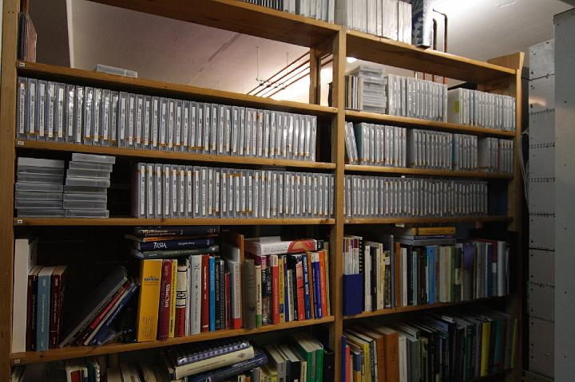

|
|  |
| ExkursionWS0809 98 |
| « | < | 97 | 98 | |
| KAMERA: Canon EOS 400D DIGITAL | DATUM: 12.12.08 17:36 | ISO-EINSTELLUNG: 800 | BELICHTUNGSDAUER: 1/60s | ÖFFNUNG: 2.8 | BRENNWEITE: 16.0mm (=26mm) |
| Anzahl Bilder: 98 | Letzte Aktualisierung: 21.12.08 17:24 | Erzeugt von JAlbum 7.3 & Chameleon | Hilfe |